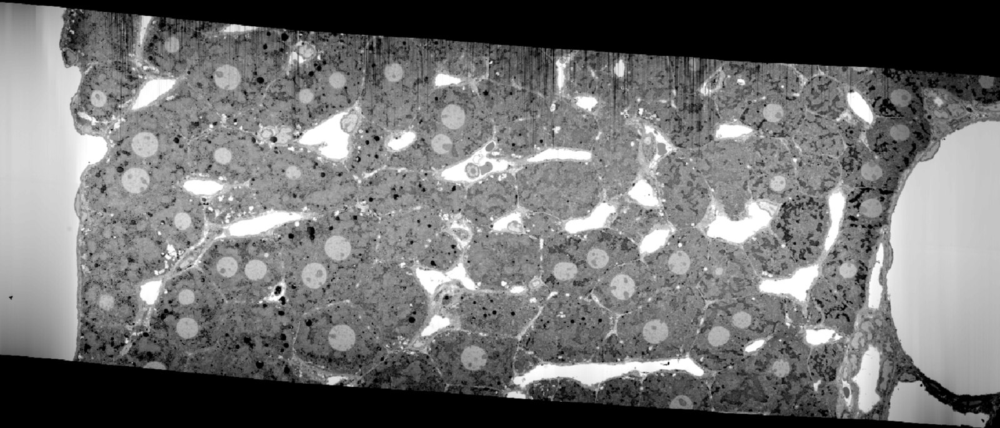
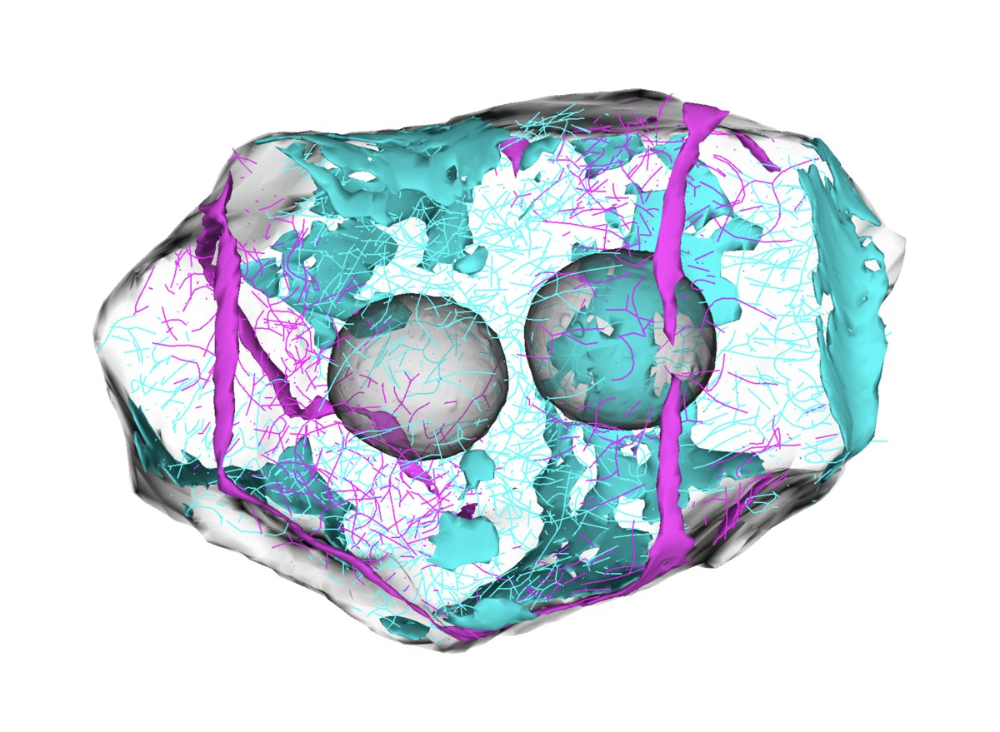
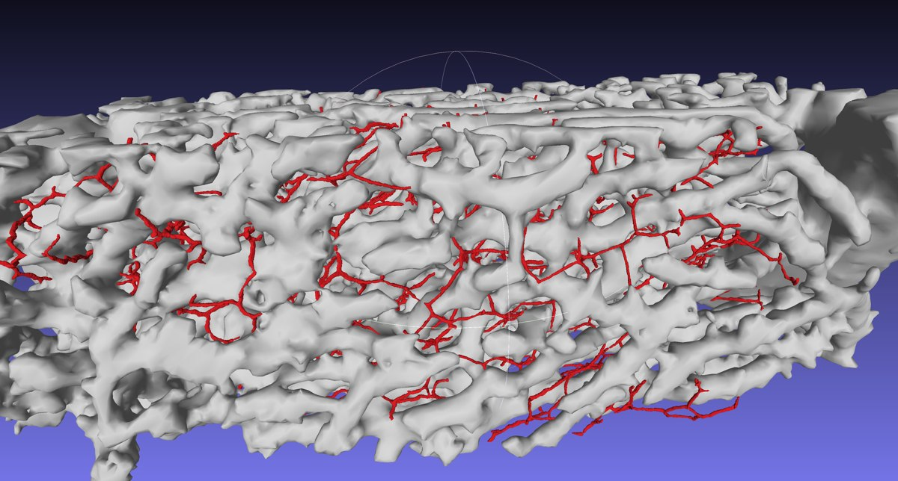
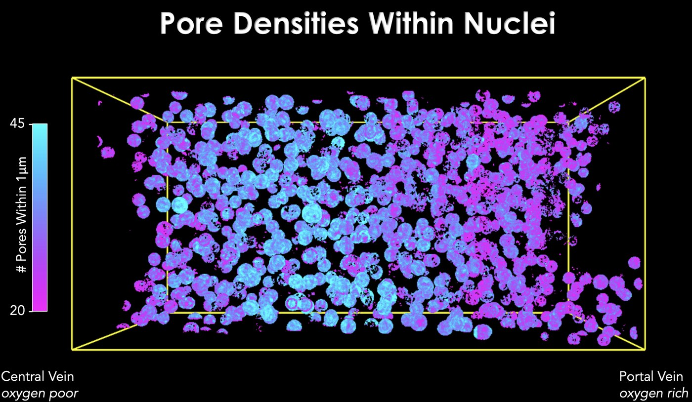
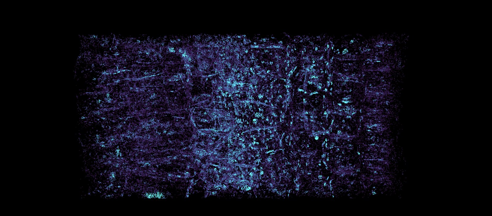

This is not an illustration — it is real data. A corner of one cell, imaged in 3D at a few nanometers, with every structure identified: mitochondria, ER, Golgi, vesicles, microtubules. This page is a tour of what that kind of data looks like, and what Alpha Cell will build with it.
How it works
A focused ion beam shaves the sample away a few nanometers at a time while an electron microscope photographs each freshly exposed face; machine learning then gives every voxel a name. Watch raw electron microscopy become labeled, 3D, measurable structure.
Tissue is preserved (chemically or by rapid freezing), imaged by FIB-SEM at 4–8 nm voxels, densely annotated by experts to create ground truth, and segmented by models trained on that ground truth. The same pipeline, end to end:
A whole cell
Not a crop, not a cartoon: an entire human cell (HeLa) with its nucleus, ER, mitochondria, Golgi, lysosomes, endosomes, lipid droplets and nuclear pores — reconstructed from the public segmentations. Drag to spin it, scroll to zoom in.
nucleus mitochondria ER Golgi lysosome endosome vesicle peroxisome microtubule nuclear pore
Four interactive neighborhoods cut from the ground-truth volumes at 2–4 nm voxels. Every one is live 3D — drag, zoom, find the nuclear pores.
Whole tissues
The same imaging scales from one cell to entire pieces of organ: thousands of cells in their native context, each one still sharp down to its membranes. That span — six orders of magnitude in a single dataset — is what no other microscopy offers.
Twelve million cubic micrometres from central vein to portal vein, with every cell and every organelle segmented — so how cells change across the liver's metabolic gradient becomes a question you can answer cell by cell.



Once a structure can be recognized automatically, it can be counted everywhere — turning “does this vary across the tissue?” into a lookup. Nuclear pores in liver 2026, in preparation, plasmodesmata in plants, and the biggest mitochondria you have ever seen.


The full volumes are public and browsable in the browser — open any dataset below in Neuroglancer and fly through the tissue yourself. No install, no login.
Not just pictures
Because every voxel is labeled, the geometry is data: how wide the space between two cells is, how curved or folded a membrane is, how much of it touches its neighbor. On these two models the color is the measurement — drag them around.
A sampler of what falls out of the segmentations — each dot is one imaged tissue volume, grouped by tissue. Hover any dot.
Effect size (Cliff's δ) for chemical vs rapid-cryo preservation across the metric suite. Red = larger under chemical fixation, blue = larger under cryo. Hover any cell.
The honest slide
Volume EM shows every membrane and organelle, but it is blind in specific, well-understood ways — and each blind spot is exactly where another part of Alpha Cell comes in.
No single microscope builds a virtual cell. The point of Alpha Cell's Space phase is to combine these views — volume EM for geometry and context, light microscopy for identity and time, cryo-ET for molecular structure — into one registered, model-ready reference.
Explore
Everything here is built on open data. Browse the volumes on OpenOrganelle, try the CellMap Segmentation Challenge, or dig into the full membrane-model library below.